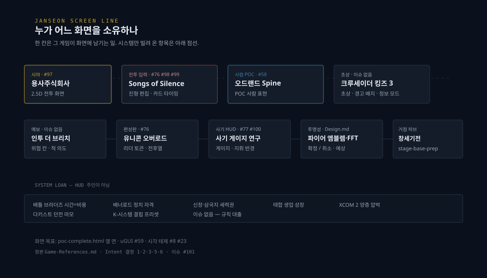

화면 목표 · Intent 결정 6
poc-complete 열 면
시작 프리셋, 캐릭터 생성, 모집, 거점 허브, 대화, 전략 노선도, 역간 여행, 조우, 전투, 정산. 열 면 HTML.
ISSUE #101
잔선 화면이 누구에게서 무엇을 빌리는지 한 장으로 고정한다. 이 보고서는 구현 모듈이 아니다. GitHub 이슈 #101의 그림판이다.
노선도 SVG, 동결 POC 캡처, 다이제틱 앵커, poc-complete.html 열 면. 정본은 Game-References.md, 각 Ref-*.md, Intent 결정 1·2·3·5·6.

화면 목표는 .omo/design/poc-complete.html 열 면이다. 아래는 그 샷과 동결 캡처다.
시작 프리셋, 캐릭터 생성, 모집, 거점 허브, 대화, 전략 노선도, 역간 여행, 조우, 전투, 정산. 열 면 HTML.

시각 테제 계약. 타이틀 COMPOSITION은 #8이 소유한다.

크루세이더 킹즈 3의 선택 공개. 화면 이름은 Design.md 조우 패널.

전열·후열·측면, 4방향 정면. 유니콘 오버로드의 편성판과 겹친다. 시야는 용사주식회사(#97).

전투 전 진형과 전투 중 카드 타이밍. 예보 칸은 인투 더 브리치, 사기 수치는 라벨렌(#77·#100).

2026-09-12 소유자 결정. 안내판·계기·노선도·관제 콘솔. 앵커는 poc-diegetic/battle-hud/.
| 레퍼런스 | 화면에 남기는 일 | 이슈 |
|---|---|---|
| 용사주식회사 | 시야와 카메라. 2.5D 전투 화면 | #97 |
| Songs of Silence | 진형 편집, 카드 타이밍, 일시정지 | #76 #77 #98 #99 #100 |
| 오드랜드 Spine | POC 사람 표현. 2.5등신, 네 방향 | #58 |
| 크루세이더 킹즈 3 | 초상·관계·경고 배지, 지도 정보 모드 | 이슈 없음 |
| 인투 더 브리치 | 위협 칸·적 의도 사전 공개 | 이슈 없음 |
| 유니콘 오버로드 | 리더 토큰, 전열·후열 편성판 | #76 |
| 라벨렌 전기 | 사기 게이지, 지휘 반경, 항복 3조건 | #77 #100 |
| 파이어 엠블렘·FFT | 확정/취소, 공격 예상 | Design.md, 이슈 없음 |
| 창세기전·트라이앵글 | 거점 허브 | stage-base-prep, 이슈 없음 |
아래는 규칙·경제·성장을 빌려 온 항목이다. HUD 레이아웃의 주인이 아니다.
| 레퍼런스 | 빌린 것 | 이슈 |
|---|---|---|
| 배틀 브라더즈 | 시간=비용, 로스터≠배치, 지형 비용 | 이슈 없음 |
| 배너로드 | 클랜 티어 → 정치 자격 | 이슈 없음 |
| 신장의야망·삼국지 | 영토 내정, 전략 노선도의 세력권 | 이슈 없음 |
| 태합입지전 | 생업 = 성장 경로 | 이슈 없음 |
| XCOM 2 | 전략 보급 고갈 × 전술 압박 | 이슈 없음 |
| 다키스트 던전 | 부상자 로테이션, 마모가 난이도 | 이슈 없음 |
| K-시스템 | 결핍의 종류가 난이도, 6종 시작 프리셋 | 이슈 없음 |
| 계약 | 내용 | 이슈 |
|---|---|---|
| uGUI + TMP | Canvas 전용, 텍스트 TMP | #59 닫힘 |
| 시각 테제 | 젖은 콘크리트, 꺼진 안내판, 비상 전원 | #8 #23 |
| 다이제틱 방향 | 안내판·계기·노선도·관제 콘솔 | 이슈 없음 |
| 화면 파이프라인 | HTML 목업 → 안정 이름 → uGUI | 타이틀 0 … 정산 7 |
| 레이아웃 무드보드 | 영역별 동결 캡처 색인 | /ui-layout-moodboard/ |
정본: docs/game-logic/Game-References.md · Intent.md 결정 1·2·3·5 · Design.md · Character-Art-Direction.md · Ui-Implementation-Pipeline.md. 캡처는 ui-layout-moodboard/images/frozen과 poc-diegetic/battle-hud/anchor-capture.png.